Гид по странице макияжа для сухой кожи
Пошаговый макияж для сухой кожи
Техника увлажнённого и сияющего макияжа без эффекта сухости
Топ средств для сухой кожи
Увлажняющие текстуры и комфортный тон без шелушений
Премиум-средства для сухой кожи
Сияющий тон, глубокое увлажнение и эффект ухоженной кожи
Бюджетный набор (до 500 MDL)
Базовый набор для мягкого и увлажнённого макияжа
Запишитесь к профессиональному визажисту
Запишитесь на макияж для сухой кожи в Молдове и получите увлажнённый, сияющий и естественный образ без ощущения сухости.
Что такое макияж для сухой кожи
Макияж для сухой кожи — это техника, направленная на создание увлажнённого, сияющего и естественного образа без ощущения стянутости и шелушений , который сохраняется в течение всего дня.
Такой макияж сочетает в себе глубокое увлажнение, кремовые текстуры и мягкое сияние . Он выравнивает тон кожи, убирает сухость и делает лицо более свежим и ухоженным.
Главная особенность — баланс между естественным сиянием и комфортом: кожа должна выглядеть живой, гладкой и увлажнённой, без эффекта пересушенности или плотной маски.
Макияж для сухой кожи идеально подходит для повседневной носки, мероприятий, фотосъёмок и вечерних выходов , так как он подчёркивает естественную красоту и придаёт коже здоровое сияние.
Подготовка сухой кожи перед макияжем
Сухая кожа требует особого ухода, чтобы макияж выглядел увлажнённым, гладким и естественным. Без правильной подготовки даже качественные средства могут подчеркнуть сухость и шелушения.
Основная задача — восстановить уровень увлажнения кожи, смягчить текстуру и создать базу, которая сделает макияж более ровным и комфортным.
- Очищение — мягкое средство без агрессивных компонентов, которое не пересушивает кожу
- Тонизирование — увлажняющий тонер для восстановления баланса кожи
- Сыворотка — гиалуроновая или увлажняющая для глубокого питания
- Питательный крем — создаёт комфортную основу и предотвращает сухость
- Увлажняющий праймер — выравнивает текстуру и помогает макияжу лечь ровно
Дайте средствам полностью впитаться перед нанесением макияжа — это обеспечит более гладкое покрытие, усилит сияние и сделает кожу визуально более здоровой.
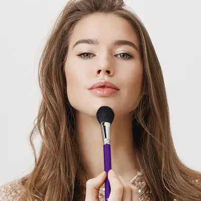
Пошаговый макияж для сухой кожи


Макияж для сухой кожи строится на увлажнении, сиянии и мягких текстурах, чтобы кожа выглядела гладкой, живой и естественной.
Увлажняющая база
Используйте питательный крем или увлажняющий праймер. Это помогает предотвратить сухость и обеспечивает ровное нанесение тона.
Тон
Выбирайте увлажняющие или сияющие тональные средства с лёгкой или средней плотностью покрытия.
Консилер
Наносите тонким слоем под глаза и на участки покраснений, избегая перегрузки кожи.
Кремовые текстуры
Используйте кремовые румяна и хайлайтер — они лучше сливаются с кожей и дают естественное сияние.
Фиксация
Лёгкая фиксация пудрой только в нужных зонах. Сухой коже не требуется сильное матирование.
Финальное сияние
Добавьте сияющий спрей или жидкий хайлайтер для эффекта здоровой и увлажнённой кожи.
Идеальный макияж для сухой кожи — это комфорт, увлажнение и естественное сияние без ощущения стянутости.
Почему макияж для сухой кожи быстро становится заметным (и как это исправить)
- недостаточное увлажнение кожи перед макияжем
- использование матирующих или сухих текстур
- отсутствие праймера или базы
- слишком плотное нанесение пудры
- недостаток ухода за кожей
Основная причина — нехватка увлажнения. Сухая кожа требует мягкого подхода и кремовых текстур.
Чтобы макияж выглядел лучше и держался дольше:
- интенсивно увлажняйте кожу перед макияжем
- используйте сияющие и кремовые текстуры
- избегайте сухих матирующих средств
- фиксируйте только отдельные зоны
- используйте спреи для увлажнения
Правильный подход помогает добиться свежего, сияющего и естественного результата без ощущения сухости и стянутости.
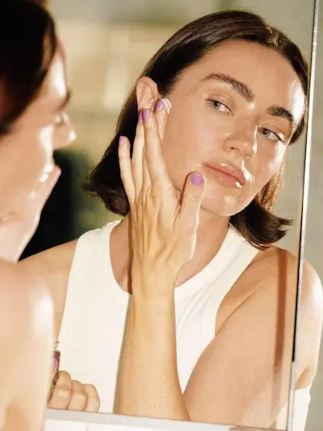
Топ средств для макияжа сухой кожи
Сухая кожа требует увлажняющих текстур, сияющих финишей и мягких формул: питательные базы, кремовые тональные средства и продукты с эффектом glow.
Независимый обзор. Продукты не спонсируются.
*Ссылка приведена в ознакомительных целях. При наличии партнёрства
здесь размещается прямая ссылка на продукт.
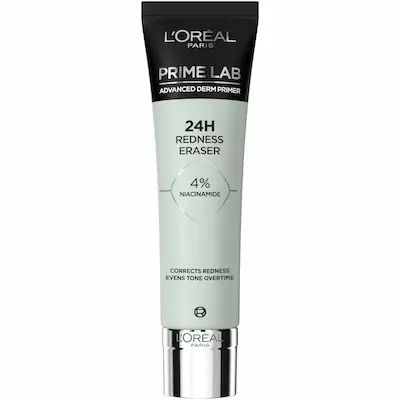
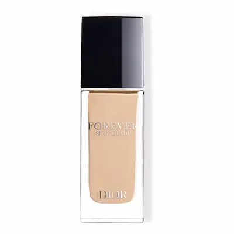
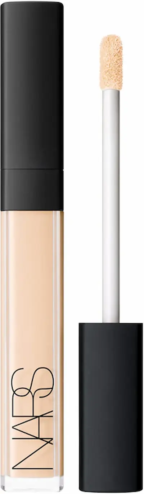
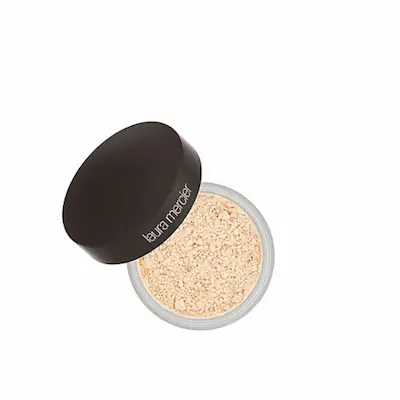
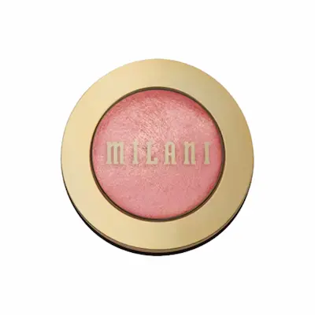
Бюджетный набор для макияжа сухой кожи (до 500 MDL)
💡 Общая стоимость набора: ~380–500 MDL
Независимый обзор. Продукты не спонсируются.
*Ссылка приведена в ознакомительных целях. При наличии партнёрства
здесь размещается прямая ссылка на продукт.
✔ Увлажнение кожи ✔ Лёгкое сияние ✔ Естественный финиш без сухости и шелушений
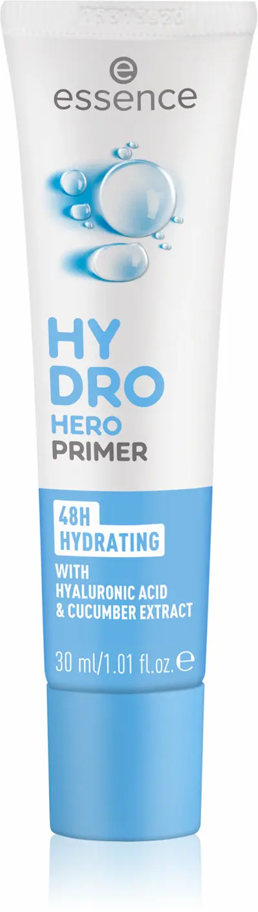
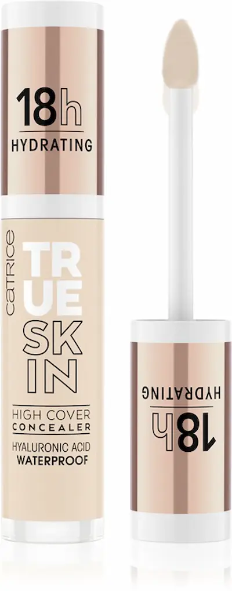

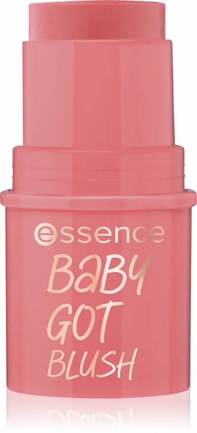
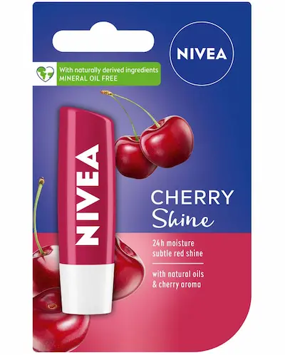
Этот бюджетный набор создан специально для сухой кожи: увлажняющие базы, лёгкие тональные средства и кремовые текстуры помогают сохранить комфорт, сияние и естественный вид без эффекта сухости.
Макияж для сухой кожи выглядит «сухо» и подчёркивает шелушения?
Сухая кожа часто приводит к тому, что макияж выглядит тусклым, подчёркивает шелушения и быстро теряет свежесть.
Это происходит не из-за косметики, а из-за недостаточного увлажнения кожи, неправильной подготовки и отсутствия сияющей базы.
Запишитесь к профессиональному визажисту и получите макияж для сухой кожи с эффектом увлажнённой, сияющей и здоровой кожи, который выглядит естественно и держится весь день.
Записывайтесь на макияж.

Частые вопросы о макияже для сухой кожи
Почему макияж на сухой коже выглядит «плоско»?
Основная причина — недостаток увлажнения. Кожа теряет сияние, и тональный крем может подчёркивать шелушения.
Как подготовить сухую кожу перед макияжем?
Нужно использовать мягкое очищение, увлажняющий крем, сыворотку и сияющий праймер, чтобы создать гладкую базу.
Какие тональные средства подходят сухой коже?
Лучше всего подходят увлажняющие или сияющие тональные кремы с легкой текстурой и натуральным финишем.
Нужно ли использовать пудру при сухой коже?
Да, но в минимальном количестве. Лучше наносить пудру только в Т-зоне, чтобы не пересушивать кожу.
Как сделать макияж стойким на сухой коже?
Важно хорошо увлажнить кожу, использовать кремовые текстуры и фиксировать макияж лёгким спреем без матирующего эффекта.
Можно ли полностью убрать сухость кожи?
Полностью — нет, но можно значительно улучшить состояние кожи с помощью ухода и правильно подобранного макияжа.